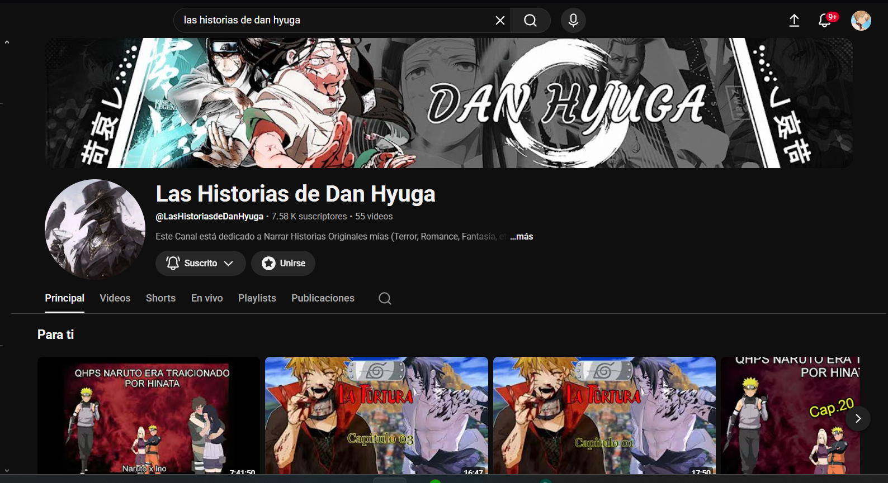

Me presento, soy Diego Armando Araujo García, al momento de hacer este proyecto cuento con 21 años. Estoy estudiando la Licenciatura en Desarrollo de Software Multiplataforma. Esta es mi página web que contará como portafolio de evidencias. Para la materia de Desarrollo Web.
Esta página web fue hecha para hacer conocer mi perfil y experiencias, así construir un historial.
Está dirigido para mi clase, además de cualquier persona que le interese tener un ayudante que aprende rápido.
Nací un 24 de marzo del 2005 en León Guanajuato, México.
Crecí en una familia humilde y católica donde nunca me faltó comida en la mesa.
Estudié los seis años de estudios primarios en la escuela primaria Insurgentes y la escuela secundaria en
la Secundaria Emperador Cuauhtémoc.
Durante la pandemia estudie la preparatoria en el CONALEP León 2
Sin embargo la calificación del segundo semestre no fue satisfactoria por lo que no me dejaron reinscribirme
El bachillerato lo cursé en el Instituto Universitario del Centro de México (EDUCEM) cumpliendo satisfactoriamente
mis estudios de bachillerato en la rama de estudio de Físico-Matemático.
Desde el año 2025 me inscribí en la Universidad Tecnológica de Léon a la carrera de Tecnológias de la Información
Con Licenciatura en Desarrollo de Software Multiplataforma, Actualmente estoy cursando el 4to Cuatrimestre del TSU.
Durante mi vida eh tenido varios proyectos actualmente tengo con un canal de Youtube en el cual cuenta con 7,000 suscriptores.
En este canal creo historias y las comparto en dicha plataforma.

En custiones de experiencia laboral, he trabajado en una tienda de abarrotes como reponedor,
en tres fabricas de calzado como almacenista, y en dos bordadoras como preliminar y posteriormente como medio bordador,
todo mientras estudiaba en distintas épocas.
Todos estos trabajos me enseñaron de diciplina. Hallé un gusto por el bordado y por el corte con láser
con los que pude trabajar en las bordadoras.
Además de estos trabajos, he editado videos y disfruto de ello.
inicié en la programación porque siempre fue mi sueño programar videojuegos, sin embargo
Cuando comencé a ver y comprender el desarrollo de software sin necesidad de que sea un videojuego, Me enganché.
Y aún sigo estudiando esta carrera.
Completé la educación primaria con promedio de 8 en la Primaria Insurgentes
Completé la educación secundaria con promedio de 8.5 en la Secundaria Emperador Cuauhtémoc
Completé el bachillerato con promedio de 9 en el Instituto Universitario del Centro de México (EDUCEM)
Actualmente estoy cursando el TSU en Desarrollo de Software Multiplataforma en la Universidad Tecnológica de León, en cuarto Cuatrimestre.
Tras casí cinco años de tener el canal de youtube activo, logré aumentar
mi audiencia a 7000 suscriptores y consiguiendo el acuerdo de partner comenzando a monetizar el contenido.
Completé satisfactoriamente los cursos de Redes y Conmutación y Enrutamiento (Routing & Switching) en CISCO NetAcad.
Si tienes alguna idea para un proyecto, Escribeme en el siguiente contacto.
| Tipo de contacto | Contacto |
|---|---|
| Correo Electrónico | diegoaraujo240305@gmail.com |